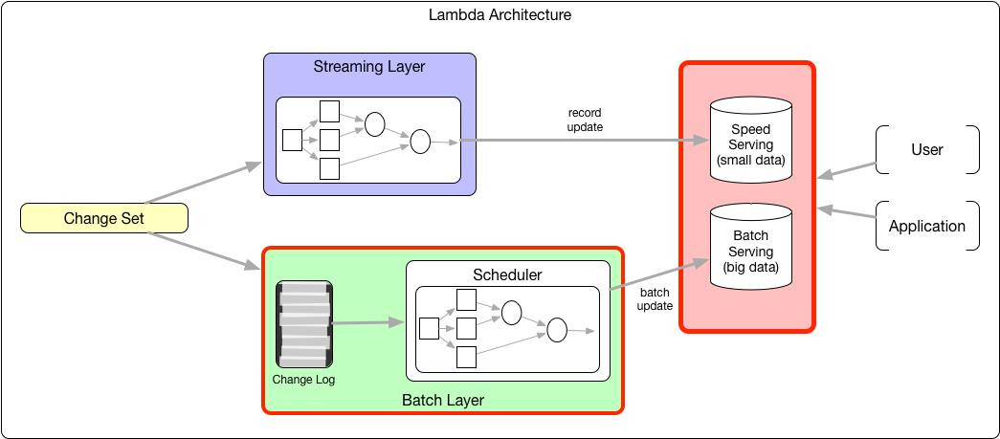

Big Data System Design
Lambda, Kappa, HDFS
Roelant Ossewaarde en Jos van Reenen, B 2019-2020
1 Behandelde referentie-architecturen voor dataopslag
1.1 Pure Relational

Bekende technologie: MySQL, PostgreSQL, MSQL.
De ETL en messaging vinden plaats in het RDBMS. Als er een voorbewerking van de data plaats vindt buiten het database-systeem (bijvoorbeeld door scripts), dan is het een Data Refinery.
1.2 Extended Relational

Vooral geschikt voor CPU-intensieve problemen ("Massively Parallel Processing") waarbij het volume data minder ver opschaalt.
Variatie in vorm van queries mogelijk (snel antwoord), maar bottleneck: geen on-disk persistentie.
1.3 Data refinery

Voorbewerking vindt plaats buiten relationele database. Dat maakt in-memory relationele database mogelijk.
Real-time analyse is beperkt (want er is een voorbewerking), volume is beperkt tot geheugengrenzen, maar wel grote varieteit aan data mogelijk doordat er een uitgebreide voorbewerking mogelijk is.
1.4 Pure Non-relational

Vooral geschikt als de vorm van queries al vaststaat en het schaalprobleem vooral het volume van de data betreft.
1.5 NIEUW: Lambda architecture

Kan alles, schaalt ongelimiteerd. Maar duur in onderhoud, want verschillende databases/codebases/etc.
1.6 Lambda architecture
Figure 6: Lambda architecture
Nieuwe data komt continue binnen (zie Streaming volgende week). Data stroomt naar zowel de Batch Layer als naar de Streaming Layer (ook wel: Speed Layer).
1.6.1 Batch layer

Figure 7: Lambda architecture Batch layer
Data wordt gecontroleerd en eventueel vertaald. Klassieke plek voor ETL / data warehousing.
- De master dataset wordt in de batch layer beheerd.
- Batch views worden hier vantevoren al berekend.
1.6.2 Serving layer

Figure 8: Lambda architecture Serving layer
De output van de batch layer (batch views) en van de streaming layer (real-time views) worden klaargemaakt om op de webserver getoond te worden. Deze laag is typisch de backend-component van een Web-systeem.
1.6.3 Streaming / Speed layer

Figure 9: Lambda architecture Streaming layer
Data worden opgeslagen die nog niet in de batch layer is opgenomen. Omdat alleen recente data gebruikt worden, kunnen realtime views worden gemaakt.
1.7 NIEUW: Kappa architecture

Vereenvoudiging door Batch Layer weg te halen.
Vooral geschikt voor toepassingen waarbij algoritmes die toegepast worden op de historische data (batch views in Lambda) dezelfde zijn als die toegepast op real-time systems. Vooral: lerende systemen.
2 HDFS
Traditioneel: storage is een aparte component in het systeem, gescheiden van compute; tegenwoordig wordt storage vaak geïmplementeerd als bijvoorbeeld Netword Attached Storage (NAS) of Storage Area Networks (SAN). Dataverwerking volgt in zulke systemen steeds dezelfde stappen: haal input data uit store; plaats data in geheugen; verwerk data; schrijf data weg.
Bij groei van storage moet ook compute groeien; en dus ook de verbinding tussen die twee. Probleem is dat de kosten van verbindingen niet-lineair stijgen: 10 x zo veel bandbreedte is meer dan 10 x zo duur. Bovendien zijn eisen aan opslag tegewoordig anders dan de eisen waarmee traditionele filesystems zijn geb
De oplossing die Google bedacht: het Google File System (GFS). Het motto is om storage en compute niet meer te scheiden, zoals in de Von Neumann architectuur: ``breng compute naar data, niet andersom''. Hadoop Distributed File System is een open source implementatie van GFS.
2.1 Bewerkingen via HDFS

2.2 Andere architectuur, ander filesysteem
Zo'n modernere architectuur stelt ook andere eisen aan de organisatie van de opslag. Design principes van traditionele filesystemen vs. GFS:
| traditioneel | GFS | |
|---|---|---|
| component failures zijn | excepties | de norm |
| geoptimaliseerd voor | files < 100 Mb | files > 100 Mb |
| datamutatie en lezen vooral | random | sequential |
| # clients | minder | veel |
| belangrijk qua snelheid | latency | bandbreedte |
2.3 Guiding principles van HDFS
HDFS staat voor Hadoop File System. Het is de door Yahoo ontwikkelde implementatie van het GFS.
- Gebruik verschillende machines voor data-opslag
- Gebruik commodity hardware
- Software moet intelligent genoeg zijn om robuust te zijn tegen hardware failure
- Repliceer de data
- Architectuur: Master-Slave
2.4 HDFS architectuur
- Name Controller:
- File system name space management
- Block mappings
- In zijn geheel in het eigen werkgeheugen
- Data Node:
- Work horse: slaat data op in blokken
- Replicatie
- Secondary Name Node
- Checkpoint node.
2.5 HDFS Multirack architectuur
2.6 HDFS replicatie

2.7 HDFS rack awareness
2.8 HDFS single-point-of-failure
2.9 HDFS data locality
2.10 HDFS namenode
2.11 HDFS namenode

2.12 HDFS leesoperatie
- Client verbindt met NN om data te lezen.
- NN vertelt client: "gebruik deze Data Nodes."
- Client leest blocks direct van de Data Nodes.
- Als data nodes niet reageren: client vraagt een andere Data Node.
2.13 HDFS schrijfoperatie
- Client verbindt met NN om data te schrijven
- NN vertelt client: "gebruik deze Data Nodes."
- Client schrijft blocks direct naar Data Node, met replication factor
- Bij Node Failures: NN repliceert de ontbrekende blocks.
2.14 Netwerk-topologie
Figure 22: HDFS Topologie
Een HDFS-netwerk heeft een structuur als een boom ('tree').
Afstand tussen twee nodes: De som van de afstand tot hun ouder (closest common ancestor).
2.14.1 Voorbeeld
Figure 23: HDFS Topologie voorbeeld
dist (d1/r1/n1, d1/r1/n1) |
= 0 |
dist(d1/r1/n1, d1/r1/n2) |
= 2 |
dist(d1/r1/n1, d1/r2/n3) |
= 4 |
dist(d1/r1/n1, d2/r3/n6) |
= 6 |
2.15 Strategieën voor replicatie
| Betrouwbaarheid | Schrijf-bandbreedte | Lees-bandbreedte | |
|---|---|---|---|
| Alle replica's in één node | Slecht | Goed | Slecht |
| Alle replica's verschillende racks | Goed | Slecht | Slecht |
| HDSFS | Goed | OK | OK |